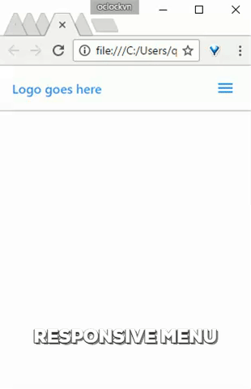

Ây da, dạo này đầu óc cứ quay cuồng với nhiều thứ. Để tĩnh tâm thì đành viết 1 cái gì đó đơn giản ra, nghĩ đi nghĩ lại thì nghĩ tới cái chủ đề này :)
Ok, chủ đề của bài viết này là tạo ra menu responsive, hay còn gọi là menu "thân thiện với môi trường", à nhầm, thân thiện với mobile.
Để hiểu về flex, bạn tham khảo tại đây
Kết quả:
Đơn giản thôi, khi thu nhỏ kích thước màn hình lại thì có 2 điều cần làm là hiển thị hamburger menu button và ẩn cái menu đi. Css cập nhật lại như sau (style 1 tí cho cái .toggle-menu):
Kết quả:

Vấn đề xảy ra theo các bước sau:
display: none;)
Nguyên nhân là do hàm toggle() của jquery đã set inline style cho menu:

Trong hàm slideToggle() truyền vào 2 tham số là duration và callback function. Callback được gọi sau khi slide animation kết thúc, mình gỡ inline style ra khỏi menu và set cho nó 1 class mới để hiển thị khi ở mobile.
Sửa lại css 1 chút như sau:
Và hoooo, ngon cơm :)
Bạn có thể xem source tại đây.